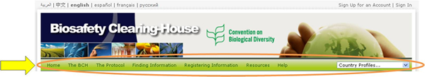

Above the welcome area of the Home page is a navigation bar that provides links to the major components of the BCH.

The BCH section provides links to information about the BCH, its development and management, highlights and policies.
The Protocol section provides links to the text of the Protocol, a list of Parties to the Protocol, COP-MOP Decisions, information about official reports, meetings documents and Notifications.
The Finding Information section provides links to search pages for the different categories of information in the BCH databases and to compiled information (i.e. National Contacts, the LMOs Registry, the Organism Registry and the Gene Registry).
The Registering Information menu entry is a link to the sign in page of the Management Centre, through which BCH users can create and manage their information.
The Resources section provides access to other useful site resources such as (i) the Common Formats used in the BCH, (ii) a page describing the solutions for National Participation (Hermes and the BCH Ajax Plug-In), (iii) Training Site of the BCH, (iv) the Glossary, (v) the Thesaurus; (vi) the Site map (vii) a list of downloadable files, (viii) Online forums and Portals, (ix) Interoperability services and (x) the available Mailing Lists.
The Help section provides access to the BCH Online Help System main page and some specific sections within it, namely: (i) Help on help, (ii) BCH Central Portal, (iii) Complete BCH Help Manuals, (iv) Training materials, as well as additional training resources found directly in the BCH: (v) BCH tutorials and (vi) Frequently Asked Questions. On the right side of the navigation bar is a search box for locating country profiles. This provides a quick search function to locate all records for each country listed.
On the right side of the navigation bar is a search box for locating country profiles. This provides a quick search function to locate all records for each country listed.
The menus on the BCH Central Portal use icons to illustrate aspects of the associated links. The commonly found menu icons include:
 Link takes the user to another website
Link takes the user to another website
 Link to a PDF document
Link to a PDF document
 Link takes the user to a page in another section of the BCH
Link takes the user to a page in another section of the BCH
Details of more icons used on the BCH Central Portal are provided in the Ready Reference 4 guide .